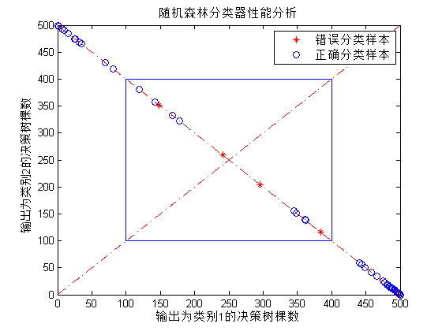
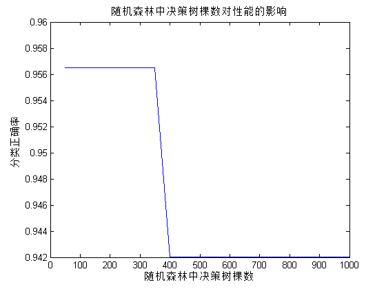

Contents
I. 清空环境变量
clear all clc warning off
II. 导入数据
load data.mat
1. 随机产生训练集/测试集
a = randperm(569); Train = data(a(1:500),:); Test = data(a(501:end),:);
2. 训练数据
P_train = Train(:,3:end); T_train = Train(:,2);
3. 测试数据
P_test = Test(:,3:end); T_test = Test(:,2);
III. 创建随机森林分类器
model = classRF_train(P_train,T_train);
Setting to defaults 500 trees and mtry=5
IV. 仿真测试
[T_sim,votes] = classRF_predict(P_test,model);
V. 结果分析
count_B = length(find(T_train == 1)); count_M = length(find(T_train == 2)); total_B = length(find(data(:,2) == 1)); total_M = length(find(data(:,2) == 2)); number_B = length(find(T_test == 1)); number_M = length(find(T_test == 2)); number_B_sim = length(find(T_sim == 1 & T_test == 1)); number_M_sim = length(find(T_sim == 2 & T_test == 2)); disp(['病例总数：' num2str(569)... ' 良性：' num2str(total_B)... ' 恶性：' num2str(total_M)]); disp(['训练集病例总数：' num2str(500)... ' 良性：' num2str(count_B)... ' 恶性：' num2str(count_M)]); disp(['测试集病例总数：' num2str(69)... ' 良性：' num2str(number_B)... ' 恶性：' num2str(number_M)]); disp(['良性乳腺肿瘤确诊：' num2str(number_B_sim)... ' 误诊：' num2str(number_B - number_B_sim)... ' 确诊率p1=' num2str(number_B_sim/number_B*100) '%']); disp(['恶性乳腺肿瘤确诊：' num2str(number_M_sim)... ' 误诊：' num2str(number_M - number_M_sim)... ' 确诊率p2=' num2str(number_M_sim/number_M*100) '%']);
病例总数：569 良性：357 恶性：212 训练集病例总数：500 良性：316 恶性：184 测试集病例总数：69 良性：41 恶性：28 良性乳腺肿瘤确诊：39 误诊：2 确诊率p1=95.122% 恶性乳腺肿瘤确诊：26 误诊：2 确诊率p2=92.8571%
VI. 绘图
figure index = find(T_sim ~= T_test); plot(votes(index,1),votes(index,2),'r*') hold on index = find(T_sim == T_test); plot(votes(index,1),votes(index,2),'bo') hold on legend('错误分类样本','正确分类样本') plot(0:500,500:-1:0,'r-.') hold on plot(0:500,0:500,'r-.') hold on line([100 400 400 100 100],[100 100 400 400 100]) xlabel('输出为类别1的决策树棵数') ylabel('输出为类别2的决策树棵数') title('随机森林分类器性能分析')
VII. 随机森林中决策树棵数对性能的影响
Accuracy = zeros(1,20); for i = 50:50:1000 i %每种情况，运行100次，取平均值 accuracy = zeros(1,100); for k = 1:100 % 创建随机森林 model = classRF_train(P_train,T_train,i); % 仿真测试 T_sim = classRF_predict(P_test,model); accuracy(k) = length(find(T_sim == T_test)) / length(T_test); end Accuracy(i/50) = mean(accuracy); end
i =
50
i =
100
i =
150
i =
200
i =
250
i =
300
i =
350
i =
400
i =
450
i =
500
i =
550
i =
600
i =
650
i =
700
i =
750
i =
800
i =
850
i =
900
i =
950
i =
1000
1. 绘图
figure plot(50:50:1000,Accuracy) xlabel('随机森林中决策树棵数') ylabel('分类正确率') title('随机森林中决策树棵数对性能的影响')